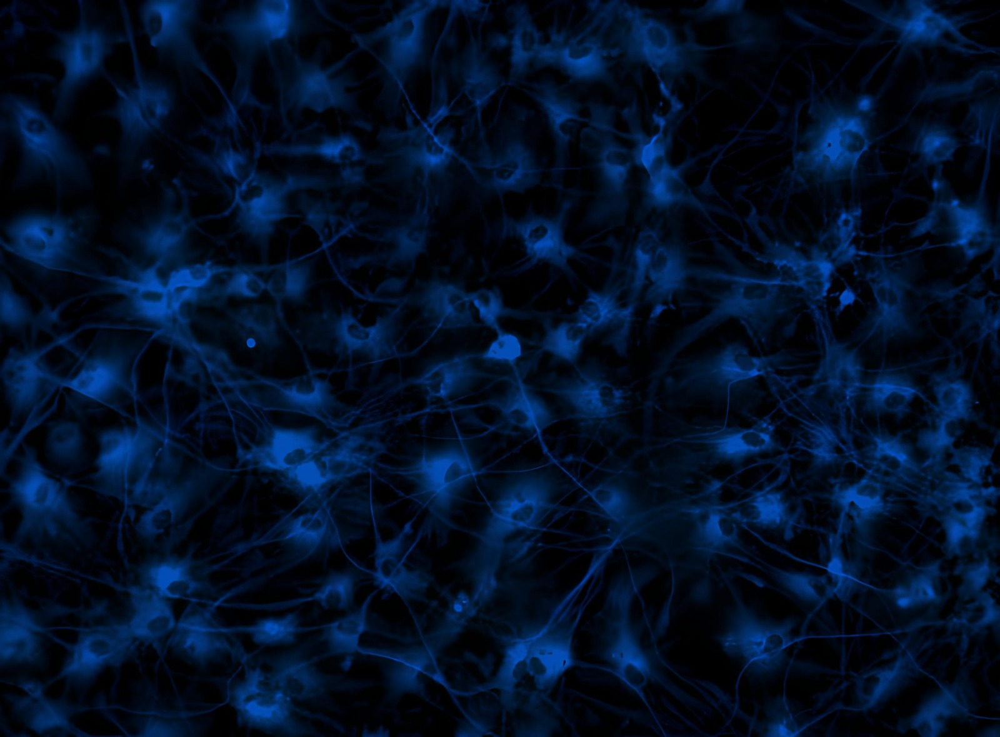

Exerkines
We investigate how exercise-released molecules, known as exerkines, influence brain health and protect against Alzheimer's disease, as well as their potential transport via extracellular vesicles.
We discover what modifies the brain, measure it non-invasively in blood, and prove causality at the gene. One research program spanning every scale of neurodegeneration.
Exercise reshapes the brain. That change shows up as a signal in the blood. Gene editing tells us whether the signal is the cause. Discover, measure, prove — a single closed program.
We investigate how exercise-released molecules, known as exerkines, influence brain health and protect against Alzheimer's disease, as well as their potential transport via extracellular vesicles.
Using CRISPR-based epigenome editing, we can precisely regulate gene activity without altering the DNA sequence, exploring new therapeutic strategies for Alzheimer's disease.
Through a simple blood sample, we can identify plasma biomarkers that may enable the early detection of Alzheimer's disease.

Our mission is to improve lives by deepening our understanding of Alzheimer's disease, uncovering how physical exercise protects the brain, and identifying blood biomarkers that reveal the earliest signs of the disease. By advancing early detection and developing new treatment strategies, we aim for a future where aging does not mean losing our memory or cognitive abilities.